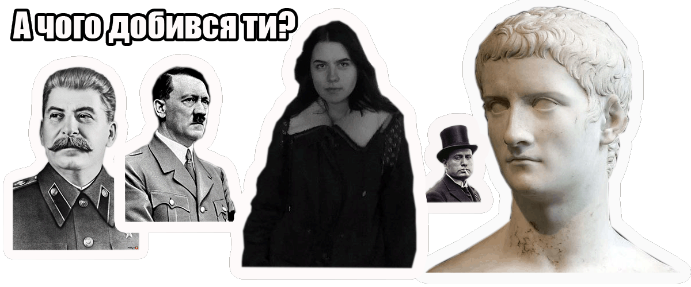

Диктатори – це особистості, що насолоджуються своїм лідерством, тероризуючи цілі нації, не тільки неефективно керують країною, а й можуть повністю привести її у занепад. Однак, їх особисте життя часто залишається за кадром, незважаючи на те, що багато чого з життя цих відомих правителів є досить дивним.

Список основних диктаторів:
Аліса Порошенко
Адольф Гітлер
Калігула
Буеніто Муссоліні
Йосип Сталін
До Вашої уваги більш детальний опис диктаторів:
Прізвище, Ім'я |
Рік народження-смерті |
Національність |
Аліса Порошенко |
2000 |
арієць |
Адольф Гітлер |
1889-1945 |
єврей |
Калігула |
12-41 |
римлянин |
Беніто Муссоліні |
1883-1945 |
італієць |
Йосип Сталін |
1879-1953 |
грузин |